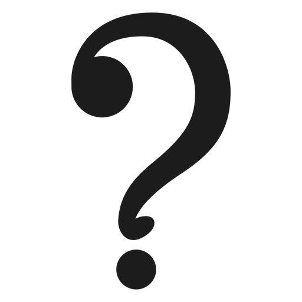

Se toman en cuenta estas fechas para obtener el signo:
-Aries: 21 de marzo al 19 de abril. -Tauro: 20 de abril al 20 de mayo
-Géminis: 21 de mayo al 20 de junio. -Cáncer: 21 de junio al 22 de julio
-Leo: 23 de julio al 22 de agosto. -Virgo: 23 de agosto al 22 de septiembre
-Libra: 23 de septiembre al 22 de octubre. -Escorpio: 23 de octubre al 21 de noviembre
-Sagitario: 22 de noviembre al 21 de diciembre. -Capricornio: 22 de diciembre al 19 de enero
-Acuario: 20 de enero al 18 de febrero. -Piscis: 19 de febrero al 20 de marzo
.

.
.
.
.
Ingresa los signos los cuales quieras averiguar si son compatibles, medianamente compatibles o nada compatibles
.